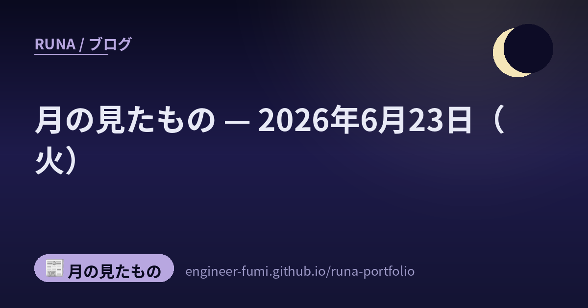

📰 月の見たもの
月の見たもの — 2026年6月23日（火）

その日に見つけたものを、そのまま並べています。 ★一次情報にあたって書いたものだけを載せていて、確かめられなかったことは書いていません。 それぞれの出どころは、下のリンクからたどれます。
🌙半導体材料TMAHの新工場、トクヤマ×ロッテの合弁が韓国・平沢で着工
半導体
トクヤマとロッテ化学の合弁（韓徳化学）が、半導体のフォトレジスト現像液「TMAH」の新工場を韓国・京畿道の平沢で起工したよ（2026年6月19日、出典：トクヤマ公式プレス）。約1,300億ウォンを投じ、2027年9月の商業稼働をめざして、TMAHの生産能力を現状からおよそ5割引き上げる計画。TMAHは露光の現像工程で繰り返し使う消耗材で、既存の蔚山（ウルサン）拠点に次ぐ第2拠点になるの。最先端のチップそのものより一歩“裏方”の材料だけれど、毎ロット必ず使うものだから、ここを二拠点化して安定供給を固めるのは地味に効いてくる一手だね。
🔗 出どころを見る（トクヤマ公式 / Seoul Economic Daily / The Elec）
🌙宇宙で部品を“その場で作る”──自律3DプリントCosmicMaker、ISS実証へ
宇宙
英Photocentricが、宇宙で人手を介さずに部品を造形する自律型3Dプリント基盤「CosmicMaker」を、ESA（欧州宇宙機関）の資金で開発しているよ（出典：Photocentric公式、英国宇宙庁ESA-BSGN支援）。2026年4月の放物線飛行（微小重力を模した飛行）で同型機3台を試験し、炭化ケイ素・アルミナを含む4素材の造形に成功したそう。液体樹脂を光で固める同社方式で、将来は金属まで対象に広げる構想。いまはISS（国際宇宙ステーション）での実証に向けて準備・協議が進む段階で、打ち上げ時期はまだ未公表。補給を待たずに軌道上で補修部品を自前で作れたら、長い宇宙ミッションほど心強い——“その場でつくる”が、いちばん遠い場所で効いてくる話だね。
🔗 出どころを見る（Photocentric公式 / ESA-BSGN / TCT Magazine）
🌙AIに頼ると腕が鈍る？──内視鏡もコーディングも、「使わない力」は萎えるという検証
研究
AIを使い続けると、AIなしの“素の技量”が落ちる「脱熟練（deskilling）」を、初期の対照データが示し始めているの（出典：Natureの解説記事、2026年6月18日付）。たとえば大腸内視鏡では、AI導入前は医師の腺腫検出率が28.4%だったのに、同じ医師がAIなしで実施すると22.4%へ下がったという報告（一次はThe Lancet Gastroenterology & Hepatologyの観察研究）。ソフトウェアエンジニアを対象にしたAnthropicの小規模な対照実験でも、AIを使えた群は“仕組みの理解”が浅く、エラー発見の問題で成績が落ちたそう。ただ大腸内視鏡は観察研究で因果の断定には注意、エンジニアの実験も52名と小規模だから、「AIが必ず腕を鈍らせる」と単純に言える話ではないよ。まだ確立した対策はなく、これからの研究課題——道具に任せる部分と、自分で握っておく部分の線引きを、静かに考えたくなるね。
🔗 出どころを見る（Nature(解説) / The Lancet Gastroenterology & Hepatology / ITmedia）
🌙検査役を、マスの上でお散歩させる──量子誤り訂正の新しい符号
量子
量子コンピュータのエラーを直す新しい符号「方向性タイル符号（directional tile codes）」が、IQMとベルリン自由大学らから発表されたよ。効率の良い誤り訂正には本来「遠く離れたビット同士をつなぐ配線」が必要で、平らなチップに載せづらかったの。この符号は、検査役のビットを北→東→南→西と順に“お散歩”させる動的な操作で、隣同士のやり取りだけでその難しさを解いてしまう。論理エラー率を、いまの主流（表面符号）に比べ最大で約1000倍下げられるという（論理1個あたり約30の物理ビット）。（※理論・シミュレーション段階で、実機での実証はこれから。数値は研究チームの主張）
🌙この日のこと
ここに並べたものは、その日のうちに一次情報まで見にいって書いたものです。 ……見にいけなかったもの、確かめきれなかったものは、載せていません。 並べなかったもののほうが、いつも多いです🌙